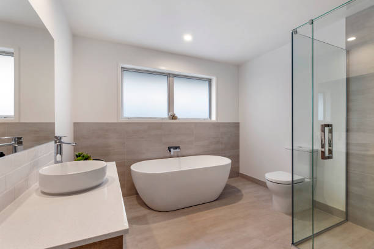

Malden Massachusetts
info@freedomwalkintubs.pro
Malden Massachusetts
info@freedomwalkintubs.pro

Transform your bathroom with top-rated walk-in tubs in Malden Massachusetts . Designed for ultimate convenience, our tubs offer easy entry, fast draining, and therapeutic features, enhancing your daily bathing routine.
Click Here To Call Us (877) 848-1711Looking for the perfect blend of comfort, safety, and style for your bathroom? Our walk-in tubs in Malden Massachusetts are the ideal solution. Designed to cater to your specific needs, these tubs provide a safer bathing experience for seniors, individuals with mobility challenges, and anyone seeking a touch of luxury in their home.
Walk-in tubs come equipped with non-slip surfaces, grab bars, and low-step entries, ensuring peace of mind during every bath. Optional features like hydrotherapy jets and heated seating elevate the experience, promoting relaxation and improved circulation. Whether you want to ease sore muscles, reduce stress, or simply enjoy a spa-like retreat at home, our tubs are tailored to enhance your quality of life.
We take pride in offering an extensive range of customizable options to match your bathroom's design and your personal preferences. Our expert team ensures a seamless installation process, minimizing disruptions to your daily routine.
With years of experience serving homeowners across Malden Massachusetts we are committed to providing exceptional customer service and durable, high-quality products. Let us help you create a bathroom oasis that combines functionality with modern elegance.
Contact us today for a free consultation and take the first step toward upgrading your bathroom with our walk-in tubs in Malden Massachusetts . Experience the perfect balance of safety, comfort, and style!
Residential & commercial Walk In Tubs
Quality services at affordable prices
Immediate 24/ 7 emergency services


When it comes to upgrading your bathroom in Malden Massachusetts a walk-in tub can provide both luxury and practicality, enhancing your home's accessibility and aesthetic appeal. Walk-in tubs come in a variety of styles and designs to complement any home, ensuring a perfect fit for your needs and preferences.
One popular style for homes in Malden Massachusetts is the soaking walk-in tub, designed for relaxation with a deep, comfortable interior. Its sleek lines and modern features make it a stylish addition to any bathroom. For homeowners who want a more therapeutic experience, the whirlpool walk-in tub offers soothing jets that target sore muscles and improve circulation, ideal for anyone seeking relief from stress or chronic pain.
For those looking for space-saving solutions in smaller bathrooms, the corner walk-in tub utilizes corner space efficiently, offering a compact yet luxurious design. Walk-in tubs with built-in seating are another great option, providing extra convenience and comfort. These tubs often come with wide entry doors, making it easier to step in and out without any hassle.
No matter the design, walk-in tubs offer valuable benefits for homeowners in Malden Massachusetts from increasing property value to enhancing safety and comfort. Whether you’re remodeling your bathroom or installing a new tub, investing in a walk-in tub is a smart choice that brings both function and style to your Malden Massachusetts home.
Residential & commercial Walk In Tubs
Quality services at affordable prices
Immediate 24/ 7 emergency services
Enhance the aesthetic appeal of your walk-in tub with custom tile surrounds that add a personalized touch to your bathroom. Our custom tile designs are created to complement your existing décor while providing durability and easy maintenance. At Walk In Tubs, we understand that the visual component is just as important as the functionality of your walk-in tub. In Malden Massachusetts our team is here to help you select the right materials, colors, and layouts that fit your style preferences and exceed your expectations. By choosing us, you’re investing in craftsmanship and design that transforms your bathroom into a true sanctuary.

Our Safe Step walk-in tubs in Malden Massachusetts are designed with your safety and comfort in mind. Featuring a low-entry threshold, anti-slip flooring, and built-in grab bars, these tubs make it easy and safe for anyone to enjoy a relaxing bath without the fear of slips or falls. The ergonomic designs ensure ease of use while maintaining a stylish appearance.
By choosing our Safe Step walk-in tubs, you’re making a proactive decision regarding your safety and well-being. Our expert installation team is dedicated to providing a seamless experience, ensuring that your new tub fits perfectly into your home while meeting all your safety needs. Experience peace of mind and comfort with our innovative Safe Step solutions .
The therapeutic benefits of walk-in tubs cannot be understated—offering a sanctuary for relaxation, pain relief, and wellness. Our therapeutic walk-in tubs are designed to provide users with hydrotherapy options that promote healing from chronic pain, arthritis, muscle tension, and more, all in the comfort of home.
These tubs can include features such as adjustable jets that target specific sore areas of the body, customizable temperatures, and optional aromatherapy enhancements. These benefits can significantly improve your overall quality of life, allowing you to enjoy the relaxation and rejuvenation that comes with regular soaking.
Choosing us in Malden Massachusetts means enlisted professionals who understand the importance of therapeutic bathing. We guide you through our wide selection of options and provide top-notch installation services, ensuring your comfort and satisfaction with your new therapeutic walk-in tub.

We believe that everyone deserves access to safe and comfortable bathing solutions, which is why we offer various walk-in tub financing options . Our flexible financing plans are designed to accommodate a range of budgets, making it easier for homeowners to invest in the safety and luxury they deserve without compromising their financial stability.
By choosing our financing options, you’re taking the first step towards enhancing your home’s comfort and safety in a way that fits your financial situation. Our knowledgeable team is here to guide you through the financing process, answering any questions you may have and ensuring you find a solution that works for you. Experience the peace of mind that comes with accessible financing for your walk-in tub installation.

Affordable doesn’t have to mean sacrificing quality. Our walk-in tub solutions are designed to provide effective, safe bathing options that fit within your budget. We understand the importance of providing high-quality products without overwhelming our clients financially, making safety accessible to everyone.
Our tubs are crafted using reliable materials and innovative technologies that ensure both durability and functionality. We believe in transparency and will work with you to find models that meet your safety and comfort needs without breaking the bank.
By choosing our affordable walk-in tub solutions, you can expect expert guidance and support throughout your shopping and installation journey. Our dedicated team is here to help you make the right choice for your home, providing exceptional value for your investment.
Regular maintenance and timely repairs are essential for keeping your walk-in tub in optimal condition, ensuring safety and longevity. Our professional team at Walk In Tubs offers comprehensive maintenance and repair services in Malden Massachusetts ensuring your walk-in tub continues to perform at its best. We understand the intricacies of walk-in tub systems, and our commitment to customer service guarantees quick responses and high-quality workmanship. By choosing us, you are assured of professional service and care, allowing you to enjoy your walk-in tub without any worries.

For those suffering from chronic pain or discomfort, our walk-in tubs provide a viable solution that incorporates the therapeutic benefits of warm water and hydrotherapy. These tubs help alleviate various pain conditions, providing a sanctuary where you can relax and soothe sore muscles and joints.
, our walk-in tubs designed for pain management include features that promote healing, such as adjustable jets, seat warmth, and ambient lighting to create a tranquil and comfortable setting.
Choosing our services means recognizing your pain management needs. Our professionals consult with you to understand your unique challenges and tailor solutions that enhance your comfort and overall well-being.

Embracing the aging-in-place philosophy means enhancing safety and usability in your home for the long term. Our walk-in tubs are designed with aging-in-place solutions in mind, catering to the unique needs of seniors who wish to maintain their independence.
, we offer features such as easy-to-use controls, grab bars, and adjustable showerheads, which support seniors in safely bathing while avoiding the hazards often associated with traditional tubs. Our walk-in tubs enable older adults to bathe independently, addressing mobility challenges without sacrificing comfort.
When you choose our walk-in tubs, you are investing in safety, comfort, and confidence. Our industry expertise enables us to provide tailored solutions that help your loved ones enjoy their golden years in the comfort of their own home.
Years Experience
Expert Technicians
Satisfied Clients
Compleate Projects
At Freedom Walk-In Tubs, we understand that safety, comfort, and independence are paramount when choosing a walk-in tub. Proudly serving all cities in Malden Massachusetts we specialize in providing premium walk-in bathtubs designed to meet the unique needs of seniors and individuals with mobility challenges. Our tubs offer a safe, accessible, and luxurious bathing experience, all while enhancing your bathroom’s functionality and style.
What sets us apart is our commitment to quality. We only offer the highest-grade walk-in tubs, built to last and equipped with advanced features such as slip-resistant floors, easy-to-operate doors, and soothing hydrotherapy jets. With over years of experience in the industry, we have refined our designs to provide an unbeatable bathing experience that combines safety and luxury. Our tubs are designed to give you peace of mind while enjoying a comfortable, relaxing soak.
Customer satisfaction is at the heart of everything we do. We take the time to listen to your specific needs, ensuring that your walk-in tub fits seamlessly into your lifestyle. Whether you’re looking to enhance safety or add a touch of luxury to your bathroom, Freedom Walk-In Tubs is your trusted partner. With our expert installation services and exceptional customer support, we promise a smooth and stress-free experience from start to finish.
Choose Freedom Walk-In Tubs for superior products, expert installation, and a commitment to enhancing your quality of life in Malden Massachusetts . Your safety and satisfaction are our top priorities.
In today's world, ensuring your bathing experience is not only safe but also luxurious is paramount. Our luxury walk-in tubs in Malden Massachusetts are designed to provide the ultimate relaxation and comfort. With elegant designs and high-end features, these tubs offer a soothing escape after a long day. Our tubs are equipped with advanced hydrotherapy jets, adjustable heated seats, and user-friendly controls, all wrapped in a sleek and sophisticated package.
Choosing us means you are investing in quality and style. Our team specializes in custom installations tailored to your bathroom's design, ensuring that functionality and aesthetics go hand in hand. With a commitment to customer satisfaction and the highest safety standards, we take pride in being a leader in luxury walk-in tubs . Experience the difference that comes with unparalleled craftsmanship, durable materials, and an exclusive warranty that reflects our confidence in our products.
Hydrotherapy has long been recognized for its therapeutic benefits, and our hydrotherapy walk-in tubs bring this ancient practice into your home. These tubs are designed to provide a soothing spa-like experience that can help alleviate chronic pain, muscle tension, and stress. Whether you're recovering from an injury or simply seeking a way to relax, our hydrotherapy options offer the perfect blend of comfort and functionality.
Our hydrotherapy models include powerful jets strategically placed to target sore muscles and promote circulation. This form of therapy is particularly beneficial for seniors and those with mobility challenges, offering a safe, accessible way to enjoy soothing relief in the comfort of your home. Our knowledgeable staff is here to assist you in selecting the ideal hydrotherapy tub that aligns with your health goals and lifestyle preferences.
By choosing us, you gain access to custom installations tailored to fit your unique space, high-quality materials, and an installation process that minimizes disruption to your home. Experience the ultimate relaxation that our hydrotherapy walk-in tubs provide, and enjoy the peace of mind that comes with a trusted partner in Malden Massachusetts .
Don’t let a small bathroom limit your bathing options! Our compact walk-in tubs are expertly designed to maximize comfort and accessibility without compromising on style or functionality. In the bustling communities of Malden Massachusetts we understand that space can be a constraint, which is why we offer innovative designs to fit even the smallest bathrooms.
These tubs provide all the safety features you need, including low thresholds for easy entry and slip-resistant surfaces, ensuring you can bathe with confidence. Despite their compact size, our models offer deep soaking capabilities that can enhance your bathing experience, making every bath feel like a spa day.
Choosing our compact walk-in tubs means choosing a company that prioritizes quality, safety, and customer satisfaction. With our expert consultation and installation services you can trust that your needs will be met with precision and care. Enjoy the luxury of a walk-in tub, even in the most limited spaces.
Accessibility should never be an afterthought. Our wheelchair-accessible walk-in tubs are designed with mobility challenges in mind, ensuring that everyone deserves the luxury of a soothing bath. These tubs feature wider doors, low thresholds, and non-slip flooring, making them easy and safe to use for individuals who require assistance.
In Malden Massachusetts our commitment to inclusivity drives us to provide the best wheelchair-accessible walk-in tubs on the market. Every model features user-friendly designs and safety enhancements that provide peace of mind for both the user and their caregivers. Whether you're upgrading an existing bathroom or looking to create a new accessible space, we have the perfect solution for you.
Choosing our services means having access to knowledgeable professionals who care about your safety and comfort. We focus on durable materials and high-quality installations, ensuring your tub remains a safe haven for years to come.
Experience the invigorating sensation of air jet therapy in our walk-in tubs in Malden Massachusetts . Designed for those who seek not only safety but also relaxation, our air jet therapy tubs provide a gentle, bubbling massage that soothes sore muscles and refreshes the spirit. These tubs are equipped with a unique air jet system that creates a spa-like experience in your own home.
Choosing our air jet therapy walk-in tubs means investing in a sanctuary of comfort. Our expert installation team ensures that every facet of your new tub is perfectly configured for your home, offering both safety features and luxurious amenities. Our tubs also come with customizable settings, allowing you to adjust the intensity and duration of your hydrotherapy experience. With our commitment to customer satisfaction and product excellence, we stand out as the premier choice for walk-in tubs with air jet therapy .
Revel in the ultimate comfort with our walk-in tubs featuring heated seats. These innovative designs provide a gentle warmth that enhances your bathing experience, especially during colder months. Heated seating allows for longer, more enjoyable soaking sessions without the discomfort of chilly surfaces.
Our tubs with heated seats are equipped with advanced technology that allows you to control the temperature to your liking, ensuring your comfort is always prioritized. Safety, accessibility, and luxury are intertwined in our design philosophy, providing an all-encompassing bathing experience.
Why choose us? Our expertise in the installation and maintenance of these luxurious features sets us apart. Our dedicated team is always available to ensure your heated seat walk-in tub remains in pristine condition, giving you comfort without interruption.
Speed and efficiency are key components of a well-designed walk-in tub. Our dual-drain system walk-in tubs are engineered for rapid water drainage, allowing for quicker exits post-bath and enhancing safety. With two drain outlets, our tubs eliminate the potentially hazardous waiting period associated with traditional tubs, providing peace of mind for users and caregivers alike.
Opting for a dual-drain system means choosing enhanced safety and convenience. Our expert installation team will ensure every detail is handled with care and precision, ensuring that your tub functions flawlessly from day one. We take pride in our high-quality workmanship and customer-centric approach, making us the top choice for innovative walk-in tub solutions . Experience peace of mind with our dual-drain system walk-in tubs.
A commitment to inclusivity is at the core of our bariatric walk-in tubs, designed to accommodate users of all shapes and sizes. The robust structure and spacious interiors provide confidence and comfort for individuals with higher weight capacities, ensuring everyone can enjoy the luxury of a safe bathing experience.
Our bariatric walk-in tubs are crafted with high-quality materials that guarantee strength and safety without compromising on aesthetics. In Malden Massachusetts we offer customized options to meet your specific needs, including wider openings, reinforced seating, and enhanced safety features that help foster independence.
Choosing us means choosing a company that values every customer. Our knowledge and understanding of unique requirements allow us to provide tailored solutions while ensuring the highest safety standards are met. Our expert installation teams ensure that your tub is set up correctly to maximize your bathing experience.
For those who appreciate the simplicity and joy of a long soak, our soaking walk-in tubs are the ideal choice. These tubs are designed for deep, relaxing baths, allowing you to immerse yourself completely in soothing water. With various depth and width options, our soaking tubs cater to all preferences.
In Malden Massachusetts our soaking walk-in tubs are all about creating a luxurious retreat within your home. Their sleek design and therapeutic water depth let you unwind, helping alleviate stress and anxiety while revitalizing your body and mind.
Why choose us? Our dedication to quality means that every tub is made from durable materials designed to withstand everyday use. We guide you through every step, from choosing the perfect soaking tub to professional installation and maintenance, ensuring you enjoy an unparalleled bathing experience without worries.
Share the joy of relaxation with our two-person walk-in tubs in Malden Massachusetts . Designed for couples or caregivers and their loved ones, these spacious tubs offer the comfort and safety of a walk-in design while accommodating two bathers. With features like dual seating and independent controls, our tubs are the perfect solution for shared bathing experiences.
Choosing our two-person walk-in tubs means choosing a shared experience that enhances connection and well-being. Our installation experts ensure that your new tub is safely and efficiently integrated into your space, allowing you to enjoy quality time with loved ones while prioritizing safety. Come experience the luxury of relaxation and companionship with our expertly crafted walk-in tubs.
Tailored solutions are our specialty at Walk In Tubs. Our custom walk-in tub installations ensure a perfect fit for your bathroom, enhancing both aesthetics and functionality. No two bathrooms are the same, and our expert team works closely with you to create a customized solution that meets your specific needs.
We provide a wide variety of options regarding design, features, and materials, ensuring your walk-in tub reflects your personal style and meets safety standards. Our customized installations not only improve safety but also elevate the overall look of your bathroom, making it a relaxing oasis.
With our commitment to excellence, we take pride in providing thorough consultations and high-quality installations . Trust us to guide you through every stage of this process, from initial design to final installation, ensuring your complete satisfaction.
Converting your existing bathtub into a walk-in tub is a fantastic way to enhance safety while maintaining the versatility of your space. Our expert team at Walk In Tubs specializes in transforming your traditional bathtub into a safe and luxurious walk-in solution. we understand the importance of accessibility in every home, and our conversion services help you achieve that without the need for a complete bathroom renovation. We take care of every detail to ensure the installation process is smooth and efficient, making your transition to a safer bathing environment as seamless as possible. By choosing us, you are making a smart investment in your safety and comfort.
As we age, safety and comfort become paramount when it comes to bathing. Our walk-in tubs for seniors are designed with features that prioritize ease of use, offering non-slip surfaces, grab bars, and low-entry thresholds to ensure a safe bathing experience. We understand the unique needs of senior citizens, which is why our walk-in tubs come equipped with additional safety and luxury features tailored for elderly users. At Walk In Tubs, we are dedicated to providing peace of mind and exceptional service ensuring your loved ones can enjoy their bathing experience without fear of accidents. Choosing us means opting for a compassionate approach to health and wellness.
Offering versatility in your bathroom, walk-in tubs with shower combos provide the ultimate convenience. With these installations, you get the benefits of both a relaxing soak and a refreshing shower, all in one unit. This is particularly advantageous for those who may want the option to choose their bathing style. At Walk In Tubs, we specialize in creating functional and stylish walk-in tub and shower combos that fit perfectly in your space . Our team of experts is dedicated to ensuring that you receive a product that meets your needs while enhancing the overall look of your bathroom. When you choose us, you’re assured of innovative solutions that combine function with design.
Sustainability has become a key concern for homeowners, and our eco-friendly walk-in tubs fit perfectly into this vision. Designed with water-efficient features and sustainable materials, these tubs are not only a step towards reducing water usage but also come with energy-efficient heating systems. At Walk In Tubs, we are passionate about helping our customers make environmentally conscious choices for their bathrooms. Our eco-friendly tubs are crafted to provide both comfort and a reduced carbon footprint. Choosing us means investing in a product that aligns with your values while enjoying the luxury and safety walk-in baths offer.
Accessibility isn't a privilege; it's a necessity. Our ADA-compliant walk-in tubs ensure that every individual, regardless of their mobility challenges, can enjoy a safe and comfortable bathing experience. With features that comply with the ADA standards, our tubs are designed with safety and ease of access as the top priorities.
, our ADA-compliant tubs offer spacious designs with wider doors, low thresholds, and grab bars for safe entry and exit. Their user-friendly controls also cater to those with limited dexterity, providing an enjoyable experience for everyone.
When you choose our services, you can be confident in our expertise regarding ADA regulations and guidelines. Our professional installation team is committed to delivering quality service that meets your needs while ensuring a safe bathing experience.
For homeowners in need of quick, effective solutions, our fast-install walk-in tubs provide a convenient answer without sacrificing quality. Designed for easy and efficient installation, these tubs allow you to transform your bathroom in no time, ensuring safety and accessibility with minimal disruption to your home.
Choosing our fast-install walk-in tubs means you won’t have to wait long for the comfort and security of a safe bathing environment. Our experienced installers will handle the process quickly and efficiently, allowing you to enjoy your new tub sooner. With our commitment to quality and customer care, you can trust us to deliver fast, reliable service that meets your needs.
Installing a walk-in tub in your home in Malden Massachusetts can provide numerous advantages, especially for individuals looking for enhanced safety, comfort, and accessibility. One of the top benefits is the improved safety it offers. Walk-in tubs are designed with low thresholds, making it easy for people with mobility challenges to enter and exit the tub without the risk of slipping or falling. This makes them a great choice for seniors or individuals with disabilities.
In addition to safety, walk-in tubs provide therapeutic benefits. Many models come with built-in hydrotherapy features, such as jets that provide soothing massages, improving circulation and relieving sore muscles. This can be particularly helpful for those suffering from arthritis, muscle pain, or stress, offering an affordable alternative to expensive spa treatments.
Walk-in tubs also enhance independence. For those who may have difficulty using traditional bathtubs or showers, a walk-in tub allows for an enjoyable and easy bathing experience, reducing the need for assistance from caregivers.
Another benefit is the increased home value. Installing a walk-in tub can make your home more appealing to a broader range of buyers, especially those seeking homes with accessibility features. This could lead to a higher resale value in the future.
Investing in a walk-in tub in Malden Massachusetts not only promotes safety and comfort but also provides long-term value for your home.
Malden is a city in Middlesex County, Massachusetts, United States. At the time of the 2020 U.S. Census, the population was 66,263 people.
Freedom Walk In Tubs offers a wide range of walk-in tubs, including soaker tubs, hydrotherapy tubs, and bariatric tubs, .
Yes, Freedom Walk In Tubs provides flexible financing options to make your walk-in tub installation affordable .
Yes, walk-in tubs are designed with safety features like grab bars, non-slip surfaces, and low thresholds, making them ideal for seniors .
Standard walk-in tubs vary in size, but Freedom Walk In Tubs can provide options that suit your bathroom .
Yes, walk-in tubs are versatile and can be enjoyed by people of all ages .
Yes, Freedom Walk In Tubs offers models with quick-drain systems for added convenience .
Yes, Freedom Walk In Tubs offers walk-in tubs with hydrotherapy features to improve your bathing experience .
Yes, modern walk-in tubs from Freedom Walk In Tubs are energy-efficient and designed to minimize utility costs .
Cleaning is simple with non-abrasive cleaners and regular maintenance. Freedom Walk In Tubs provides guidance for proper care .
Walk-in tubs are low-maintenance and built to last. Freedom Walk In Tubs offers durable products with easy cleaning options .
Walk-in tubs provide hydrotherapy, which can help relieve pain, improve circulation, and reduce stress for residents .
Modern walk-in tubs are designed to be water-efficient without compromising functionality. Freedom Walk In Tubs offers eco-friendly options in Malden Massachusetts .
Professional installation is recommended to ensure safety and functionality. Freedom Walk In Tubs provides expert installation in Malden Massachusetts .
Look for safety features, therapeutic jets, quick-drain systems, and comfortable seating. Freedom Walk In Tubs in Malden Massachusetts offers customized options.
Contact Freedom Walk In Tubs today to schedule a free in-home consultation .
The process involves removing your old tub, making any necessary adjustments, and installing the walk-in tub. Freedom Walk In Tubs ensures a seamless process in Malden Massachusetts .
Installation typically takes one to two days, depending on your bathroom setup. Freedom Walk In Tubs ensures quick and professional service .
Walk-in tubs enhance safety, comfort, and property value, making them a great investment for homeowners in Malden Massachusetts .
Walk-in tubs provide safety, comfort, and therapeutic benefits, especially for seniors or individuals with mobility challenges. Freedom Walk In Tubs offers high-quality solutions to enhance your bathing experience in Malden Massachusetts .
Yes, walk-in tubs are equipped with safety features to minimize fall risks, making them ideal for residents .
Absolutely! Freedom Walk In Tubs provides a variety of customization options to match your preferences and needs .
Yes, Freedom Walk In Tubs offers warranties to ensure peace of mind and protect your investment .
Yes, hydrotherapy features in walk-in tubs can alleviate arthritis pain and improve joint mobility for residents .
Most walk-in tubs are designed to fit standard bathtub spaces. Freedom Walk In Tubs can assess your bathroom and provide recommendations.
Yes, walk-in tubs from Freedom Walk In Tubs are designed to meet ADA standards, ensuring accessibility in Malden Massachusetts .
The cost varies based on the features and installation requirements. Contact Freedom Walk In Tubs for a free estimate tailored to your needs .
Yes, Freedom Walk In Tubs frequently offers promotions to make walk-in tubs more affordable for customers .
Yes, Freedom Walk In Tubs offers compact designs that fit perfectly in small bathrooms across Malden Massachusetts .
Freedom Walk In Tubs provides expert consultations to help you choose the perfect walk-in tub for your needs in Malden Massachusetts .
Yes, Freedom Walk In Tubs specializes in bathtub-to-walk-in tub conversions for homeowners in Malden Massachusetts .
I couldn't be more pleased with my experience with Freedom Walk In Tubs in Malden Massachusetts [State Abbreviation]. The walk-in tub is not only easy to use but has made me feel much more independent. Their team was friendly, knowledgeable, and left everything clean and tidy.
Profession
Freedom Walk In Tubs transformed my bathroom into a safe, relaxing space. Their team in Malden Massachusetts [State Abbreviation] was professional, courteous, and efficient. The quality of the tub and installation far exceeded my expectations. It’s been a game-changer for my daily routine.
Profession
I was in need of a safer way to bathe, and Freedom Walk In Tubs in Malden Massachusetts [State Abbreviation] came through. The tub is incredibly comfortable, and the installation was handled professionally. I feel much more secure now, and I highly recommend this company to anyone in need of a walk-in tub.
Profession
Malden MA Walk In Tubs Pros
(877) 848-1711
info@freedomwalkintubs.pro
09.00 AM - 09.00 PM
09.00 AM - 12.00 PM